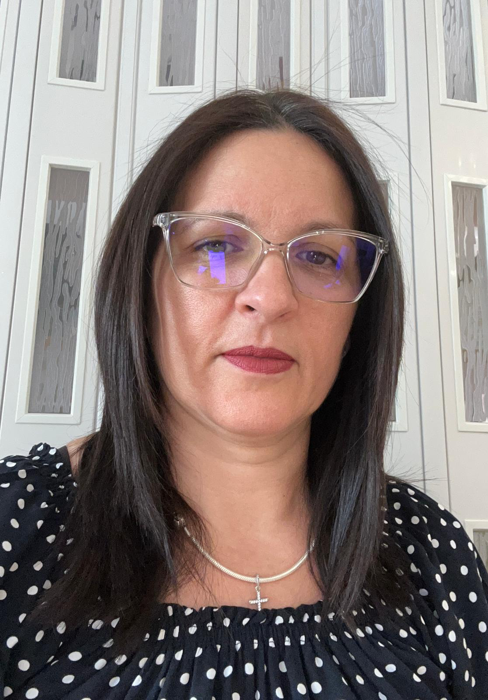

Electrical measurements
Electrical and electronic measurements, scientific instrumentation and measurement systems.
Explore research →Electrical engineering · Environment · Education
Lecturer, PhD · Researcher
Electrical measurements, scientific instrumentation and environmental monitoring. Research and education at the Faculty of Electrical Engineering, POLITEHNICA Bucharest.

Counts from the supplied publication list; the six teaching books are included in the 40 outputs. The doctoral thesis is listed separately.
Research interests
Electrical and electronic measurements, scientific instrumentation and measurement systems.
Explore research →UAV-based monitoring of environmental parameters following fires, air-quality assessment and payload energy use.
Explore research →Recovery and recycling of metallurgical by-products, material characterisation and environmental applications.
Explore research →Research & collaboration
Research collaboration
Research collaboration
Research collaboration
Selected publications
Irina Vîlciu, B.A. Enache, M. E. Diaconu, G. Stavros, G.C. Serițan, “Energy-Efficient Optimisation of UAVs through Payload Power Architecture Design”, 14th International Conference and Exposition on Electrical and Power Engineering, EPEi 2026, October 22-24, 2026, Iași - Romania.
G.C. Serițan, I.T. Voicilă, Irina Vîlciu, B.A. Enache „Modern Electrical &Electronic Measurement Labs”, Editura Politehnica Press, București, 2026, ISBN 978-630-339-035-2
E. Fiorentis, Irina Vîlciu, O.M. Ghiță, L. Lipan, B.A. Enache, „PV Container for green energy production”, U.P.B. SCi. Bull, Series C, Vol. 86, Iss.2, 2024, ISSN 2286-3540, WOS:001247513600028
Irina Vîlciu, B.A. Enache, G.C. Serițan, T.I. Voicilă, ”An Indoor Air Quality Score Computation and System”, 2023 13th International Symposium on Advanced Topics in Electrical Engineering (ATEE), ISBN 979-8-3503-3193-6, DOI: 10.1109/ATEE58038.2023.10108307
Teaching & academic practice
Electrical and electronic measurements, measurement systems and materials engineering.